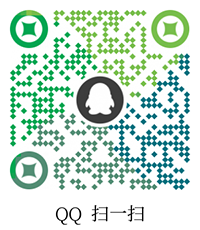

J L K B
神
奇
的
外
设
可
自
定
义
可
定
制
旋
钮
、
摇
杆
等
……
首 页
选 购
定 制
下 载
教 程
测 试
更 多
选 购
点我选购一个属于自己的外设吧！...
或扫码选购↓↓↓↓↓↓
定 制
定制一个独一无二的外设……
点我了解定制流程
或请扫码咨询

下 载
自定义改键驱动下载……
请选择对应版本，0.6和0.7.1版本互不兼容！
中文Win-0.6
中文Mac-0.6
中文Win-0.7.1
中文Mac-0.7.1
蓝牙双模改建
英文Web版
固件更新工具
教 程
自定义改键宏等简易教程
固件更新教程，
更多详细教程请
Google
或
bing
搜索Vial教程……
测 试
外设测试……
键盘测试
游戏手柄测试
MIDI测试
更 多
留给未来……
3D打印外壳文件
固件下载
选购
选购
微信
微信
QQ
QQ
首页
去顶部